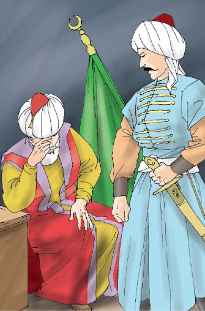

- Estağfirullah babacığım, dedi. Bir anda şehit olmak aklıma geldi de belki onun içindir.
Şehadet sözünü duyunca baba ve bütün kardeşler mahzun oldular. Orhan Gazi, ağladı. Süleyman Paşa,
- Niçin ağlarsınız babacığım, dedi.
- Beni can evimden vurdun oğlum. Halil’imin acısı her gün beni yakıp kavururken bir de sen böyle şeyler söyleme.
Süleyman Paşa varıp babasına sarıldı. O da ağladı.
- Mahzun olma babacığım, dedi. Kaderde ne varsa onlar olacak. Rabbimizin dediği olacak. Ha otuz kırk sene önce, ha otuz kırk sene sonra... Ne fark eder ki. Karar verilmiştir ve karardan dönmek yoktur. Yarından tezi yok, hazırlıklara başlıyoruz.
Orhan Gazi, oğlunun son sözlerinden biraz güç buldu.
- Hele oturun şöyle, dedi. Senin halin şuna benziyor ki, Ata bin Meysere hazretleri, bir gün sevdiklerine;
- Kardeşlerim, Allah’ın kullarını gafletten ikaz edin. Nimet bilin bu yolda gelen sıkıntıları. Mademki eceliniz muhakkak bir gün gelecek, öyleyse şimdi geldi bilin, buyurdu.
Ve ekledi:
- Çünkü bir şeyin olması “muhakkak” ise, onu, “oldu” bilmeli, ona göre yaşamalıdır.
Şöyle devam etti:
- Mademki her insan muhakkak ölecek ve ahiret yurdunda sonsuz yaşayacaktır. O halde kendinizi “ölmüş” bilin ve “ahiret âleminde” düşünün kendinizi. Gazan mübarek olsun oğlum.
Bu âlim yine bir sohbetinde;
- Kardeşlerim, bir kimse bir yolculuğa çıkacak olsa, henüz çıkmadan bir hazırlık yapar değil mi? diye sordu. Onu dinleyenler:
- Elbette efendim.
- Hele gittiği yerde çok kalacaksa, ona göre hazırlanır değil mi?
- Evet efendim.
- Hiç hazırlık yapmadan yola çıkarsa, o yolculukta çok sıkıntıyla karşılaşır. Hâlbuki bu sıkıntı, “dünya sıkıntısı”dır ki, “ahiret sıkıntısı” yanında “hiç” kalır. Çünkü ahiret azapları, dünyada olanlarla kıyas edilemeyecek kadar şiddetlidir.
Ölümün yüzü soğuktur ama mutlaka bir gün gelecek. Şehit olan için ise ölüm acısı ve hesap yoktur. Onların yeri doğru cennettir. Kardeşiniz Süleyman bunun için bizlerden şanslı. Hayırlı olsun. Cennete giderken bizleri de almadan gitme oğlum. Evlatlarım, sıkıntının üç sebebi vardır.
- Bunlar nedir baba?
- Kibir, hırs ve şehvettir.
- Peki çaresi nedir babacığım?
- Birine kızmak istiyorsan, önce kendine kız evladım. Çünkü nefsin, en büyük düşmanındır. Seni cehenneme atmak istiyor.
Bu sözlerden sonra şehzade, parlak fethin gerçekleşmesi duasını alarak, adaletli hünkârın elini öptükten sonra veda etmiş, kendi idaresindeki Karesi vilayetine dönmüştü. Ece Bey, Gazi Fazıl ve Evrenos Bey gibi önde gelen kumandanları başta olmak üzere seksen kadar dilâveriyle Edincik’e gelmiş, burada babasının arzusunu ve kendi maksadını gazilere açmıştı.
- Komutanlarım, dedi. Şu tehlikeli denizden nasıl geçer de, Rumeli topraklarında zaferler kazanırız. Bize yol gösterecek kimse var mıdır?